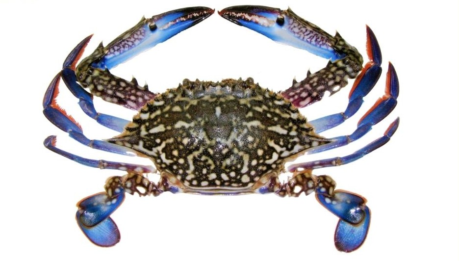
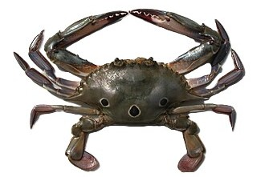
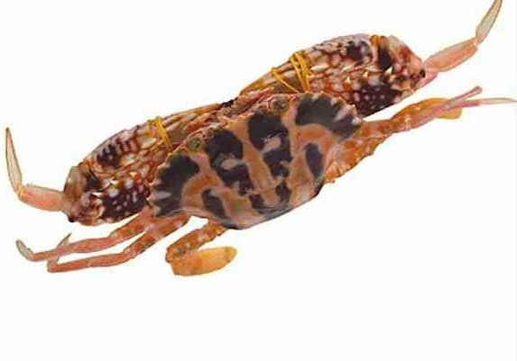

Cung cấp kiến thức chuyên sâu về đặc điểm sinh học, cách phân biệt các loại ghẹ và bí quyết lựa chọn hải sản luôn tươi ngon, chắc thịt.
Ghẹ (mã danh khoa học: Portunidae) là một họ cua bơi bao gồm nhiều loài hải sản có giá trị thương mại cao. Khác với cua biển thông thường sống ở vùng bùn nước lợ, ghẹ chủ yếu ưa thích vùng biển xa bờ, nước trong và đáy cát hoặc rạn san hô.
Về mặt dinh dưỡng, thịt ghẹ chứa hàm lượng lớn Protein, Omega-3, Canxi, kẽm và Vitamin nhóm B. Đây là nguồn bổ sung dưỡng chất tuyệt vời cho hệ tim mạch và xương khớp, đồng thời chứa rất ít chất béo bão hòa.
Tại vùng biển Việt Nam, các ngư dân thường đánh bắt được các loại ghẹ chủ lực sau:

Vỏ có màu xanh lam đặc trưng, con đực màu xanh đậm đốm trắng, hai càng dài mảnh. Đây là loại ghẹ được ưa chuộng nhất vì thịt rất ngọt và chắc.

Thân hình có màu nâu vàng hoặc xám ghồ ghề, đặc trưng với 3 chấm tròn màu đỏ sẫm viền đen rất rõ ở phần cuối mai lưng.

Toàn thân nổi bật với màu đỏ hồng, trên lưng có các đường sọc màu kem nhạt xếp thành hình chữ thập mang tính biểu tượng. Vỏ dày nhưng thịt rất thơm.
| Loại Ghẹ | Độ chắc & Ngọt của thịt | Kích thước trung bình | Giá thành tham khảo |
|---|---|---|---|
| Ghẹ Xanh | ⭐⭐⭐⭐⭐ (Thịt chắc, thơm nhất) | 150g - 300g / con | Cao nhất (Khoảng 350k - 600k/kg) |
| Ghẹ Bông | ⭐⭐⭐⭐ (Thịt nhiều, thơm) | 200g - 400g / con | Trung bình - Cao (Khoảng 300k - 450k/kg) |
| Ghẹ Đỏ | ⭐⭐⭐ (Thịt ngọt mềm, vỏ dày) | 250g - 500g / con (Kích thước lớn) | Bình dân (Khoảng 200k - 350k/kg) |